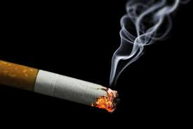
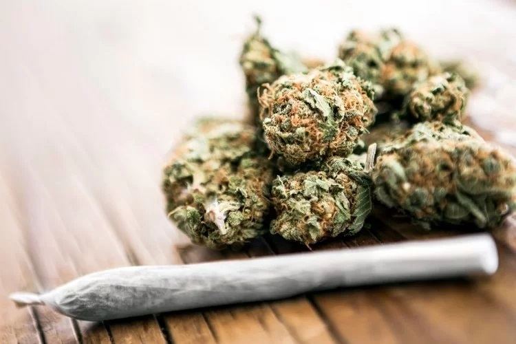
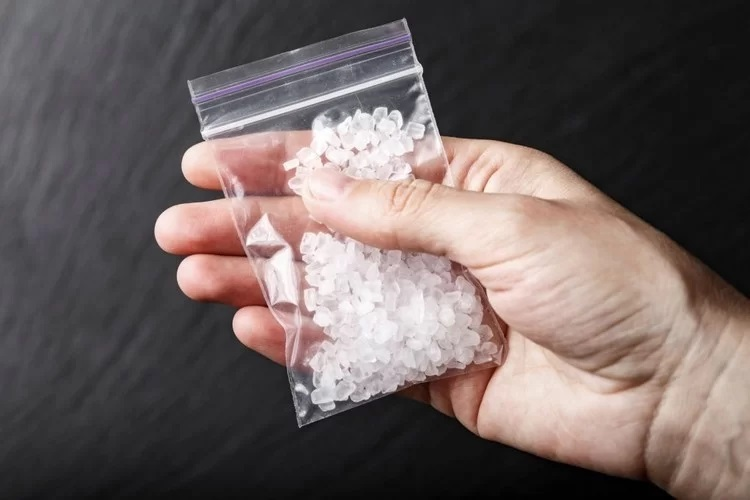
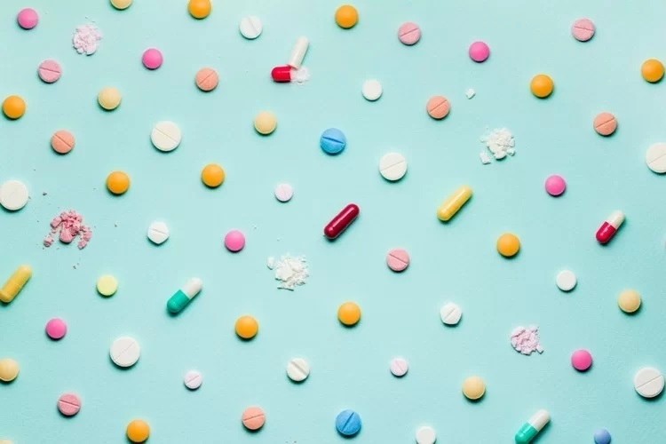
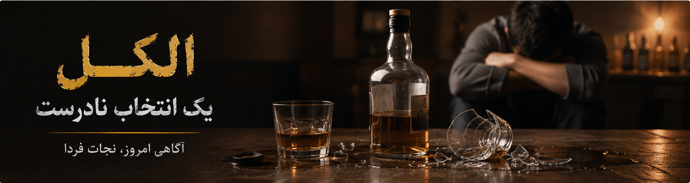

برای آشنایی بیشتر روی هر ماده کلیک کنید.

آشنایی با مضرات مصرف سیگار

آشنایی با عوارض گل

آشنایی با خطرات شیشه
آشنایی با خطرات مصرف هروئین و وابستگی شدید آن

آشنایی با اثرات مواد توهمزا بر مغز و رفتار

آشنایی با اثرات مشروبات الکلی بر مغز و رفتار
هر یک از مواد مخدر و دخانیات، ویژگیها و خطرات متفاوتی دارند. برای آشنایی با هر ماده، روی کارت مربوط به آن کلیک کنید تا اطلاعات کامل درباره عوارض، راههای پیشگیری و نکات آموزشی را مشاهده کنید.
بیشتر افرادی که در سنین نوجوانی به مصرف مواد روی آوردهاند، در ابتدا تصور میکردند که فقط یک بار امتحان میکنند. اما بسیاری از این مواد وابستگی شدید ایجاد میکنند و ترک آنها بسیار دشوار است.
آگاهی، مهارت «نه گفتن»، انتخاب دوستان مناسب و داشتن سبک زندگی سالم، بهترین راههای پیشگیری از اعتیاد هستند.
هیچ ماده مخدری بیخطر نیست. برخی مواد حتی با یک یا چند بار مصرف میتوانند باعث وابستگی روانی یا آسیب جدی به مغز شوند.